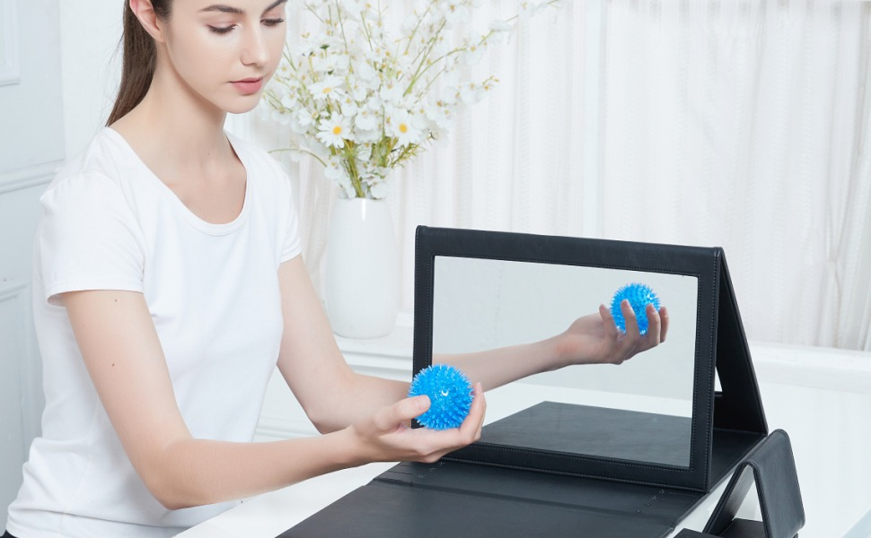

Syrebo-kolom voor klinisch onderzoek
Op bewijs gebaseerde artikelen over robotische handrevalidatie


Er wordt al jaren over thuisrevalidatie gesproken, maar producten die daadwerkelijk bij patiënten thuis terechtkomen en elke dag worden gebruikt, blijven zeldzaam. Een artikel uit 2023 in het Journal of the Robotics Society of Japan (vol. 41, nr. 4), over vingerrevalidatierobots voor thuisgebruik bij hemiplegie en samenwerking met medische professionals, maakt precies dit punt: hoewel er nog weinig commerciële gevallen zijn, bestaan er wel producten die voor thuisgebruik zijn gerealiseerd — en het artikel noemt de Syrebo®-handrevalidatiehandschoen als een daarvan.
Het Journal of the Robotics Society of Japan (2023) noemde de Syrebo®-handrevalidatiehandschoen als een van de weinige handrevalidatierobots wereldwijd die met succes voor thuisgebruik op de markt zijn gebracht. Thuisrevalidatie is niet slechts een concept — Syrebo heeft het al gerealiseerd. Wat dat mogelijk maakt, is dezelfde route als in de rest van deze column: een zacht, draagbaar ontwerp dat patiënten daadwerkelijk thuis kunnen gebruiken, waardoor revalidatie van het ziekenhuis naar het dagelijks leven wordt verlengd.
Beperkingen van de studie: dit is een vermelding in een overzichtsartikel, geen klinische proef met Syrebo; het artikel zelf benadrukt dat zulke commerciële gevallen nog weinig voorkomen.